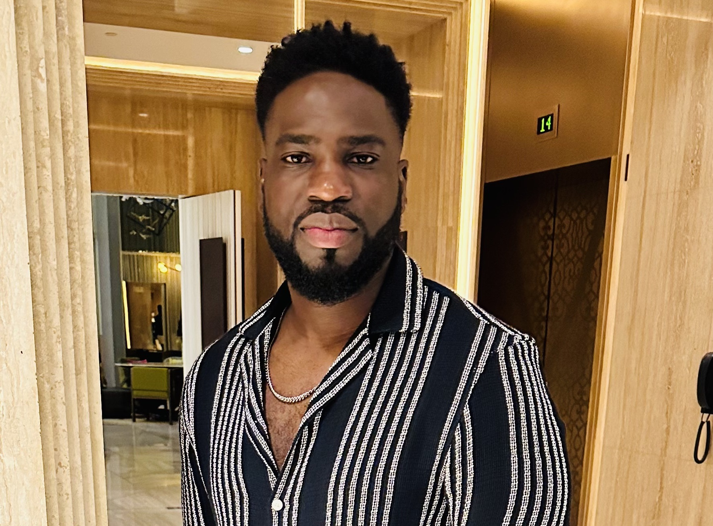

About Me

I am a personable, engaging and experienced chartered accountant currently undergoing a career transition to the digital space. My interest for web development stems from my passion for problem solving. The feeling of a great sense of success after solving a complex problem is indescribable and I look forward to working in a field that greatly links with my passion. I am currently studying in a Frontend Web Development bootcamp certificate program at edX Online, where I am continuing to build my skills in HTML & CSS, JavaScript, React.js, and responsive web design. I thoroughly enjoy collaborating with my peers to bring our software visions to life.